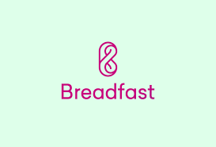

Despite the global supply chain challenges and tough economic realities, Egyptian startups have been venturing into innovative ideas, growing in funding and attracting foreign investments. The Egyptian government and venture capitalists have also been investing in the startup ecosystem to upskill professionals and achieve better gender parity in leadership. Here is a list of prommosing startups in Egypt!
|  | Breadfast is a mobile app that allows users to shop for bakeries, groceries, fruits, veggies, personal care, and household products. Breadfast has raised $26 million in Series A financing from an impressive group of investors. | |
Rabbit is an on-demand grocery platform that delivers in 20 minutes. The company depends on large warehousing and micro-fulfilment centers in four neighborhoods in Cairo. |
| MoneyFellows digitizes a traditional financial money-pooling practice in Egyptian culture. In the start of 2022, MoneyFellows collaborated with e-Cards to provide financing solutions for beneficiaries of government support programs. | Paymob A digital payment startup that operates in the Middle East and Africa. Earlier this year, the company raised $50 million in a funding round led by Kora Capital and PayPal Ventures, the corporate venture arm of PayPal. | ||
| Bosta provides overnight last-mile delivery services to e-commerce companies, allowing them to reduce their shipment time while tracking operations. The company announced plans to expand regionally and globally and aims to increase its daily shipments by five folds this year. | Instabug is a software company that provides bug reporting, app performance monitoring, crash reporting, in-app chats, and user surveys for mobile apps. The company was founded in 2014. |